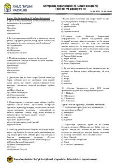

TT10-sinf tojik tili va adabiyoti fani bo'yicha olimpiada test savollari to'plami.
Ushbu hujjat 10-sinf o'quvchilari uchun tojik tili va adabiyoti fanidan o'tkazilgan tuman olimpiadasi topshiriqlarini o'z ichiga oladi. Test savollari tojik tili grammatikasi, adabiyot tarixi va mumtoz asarlar tahliliga oid 30 ta savoldan iborat.